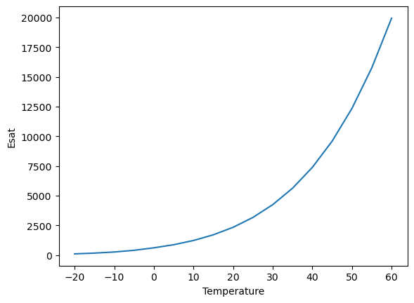
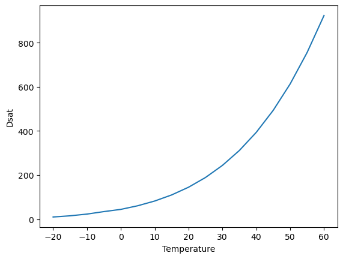
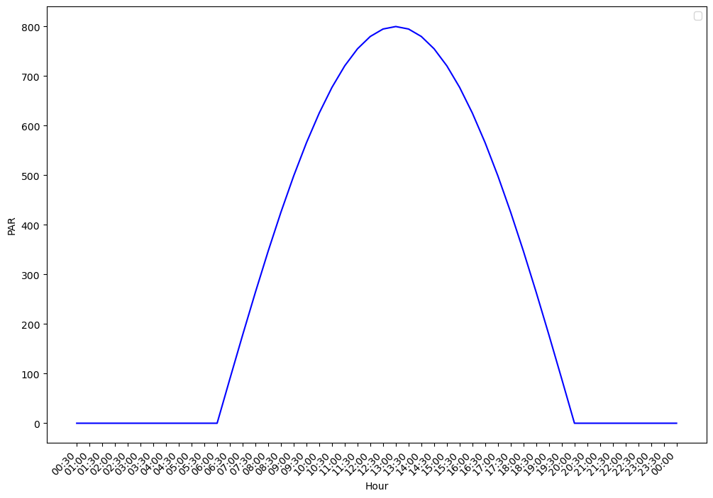
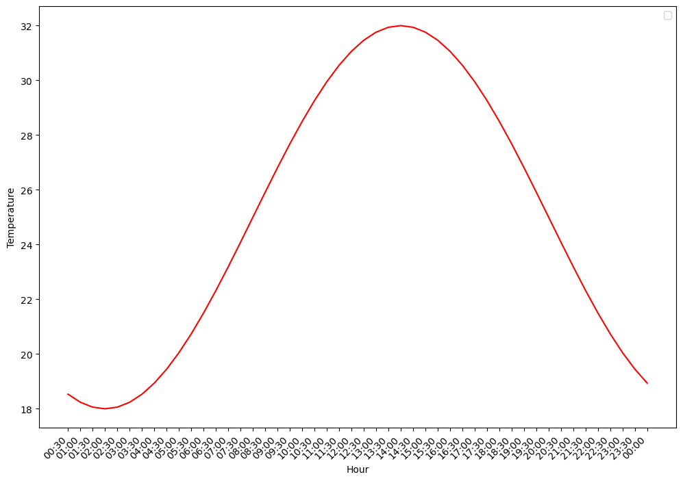
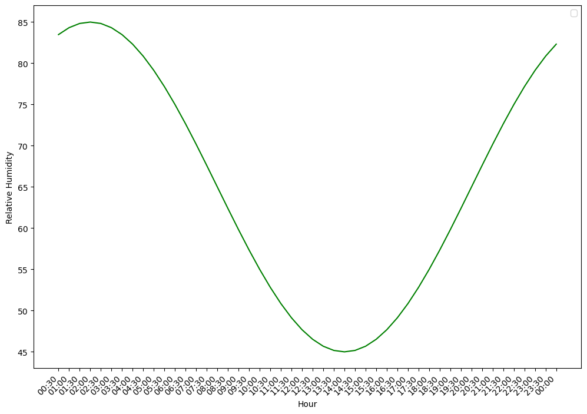

get_elevation
def get_elevation(
lat:float, lon:float
)->float:Query Open-Elevation API for elevation in meters. Used in Penman-Montieh ETP_h calculation
Query Open-Elevation API for elevation in meters. Used in Penman-Montieh ETP_h calculation
List all available example data files in the package data folder.
Compute saturation vapor pressure (esat) and the rate of change in saturation vapor pressure with respect to temperature (dsat = d(esat)/dT).
Polynomial approximations are from: Flatau et al. (1992) Polynomial fits to saturation vapor pressure. Journal of Applied Meteorology 31:1507-1513. Input temperature is Celsius.
Parameters:
Returns:
esat,dsat : float esat: Saturation vapor pressure (Pa), desat: d(esat)/dT (Pa/K).
saturation_vapor_pressure_esat = []
saturation_vapor_pressure_dsat = []
temperature_range = []
for each_temperature in range(-20, 65, 5):
temperature_range.append(each_temperature)
saturation_vapor_pressure_esat.append(satvap(each_temperature)[0])
saturation_vapor_pressure_dsat.append(satvap(each_temperature)[1])
plt.xlabel("Temperature")
plt.ylabel("Esat")
plt.plot(temperature_range, saturation_vapor_pressure_esat)
plt.show()

Latent heat of vaporization (J/mol) at temperature tc (degC).
Parameters:
Returns:
val : float Latent heat of vaporization (J/mol).
def calc_radiative_forcing_qa(
solar_down, # Total downward solar radiation incident on the leaf (W/m2).
# Split equally between visible and near-infrared wavebands.
leaf, # Leaf object with the following attributes:
# - rho : list[float]
# Leaf reflectance for visible and near-infrared wavebands (-).
# - tau : list[float]
# Leaf transmittance for visible and near-infrared wavebands (-).
# - emiss : float
# Leaf emissivity (-).
ground_albedo, # Ground surface albedo for visible and near-infrared wavebands (-).
ground_lw, # Upward longwave radiation emitted by the ground surface (W/m2).
irsky, # Downward atmospheric longwave radiation (W/m2).
): # Leaf radiative forcing (W/m2 leaf). Sum of absorbed solar radiation
across both wavebands and absorbed longwave radiation from sky and
ground.Calculate leaf radiative forcing Qa (Equation 10.3).
Compute the total radiation absorbed by a leaf from solar (visible and near-infrared wavebands) and longwave (sky and ground) sources. Solar radiation is split equally between visible and near-infrared wavebands, and includes both direct and ground-reflected components.
Implements Equation (10.3) from Bonan (2019):
Qa = Σ_Λ S↓_Λ (1 + ρg_Λ)(1 - ρℓ_Λ - τℓ_Λ) + εℓ (L↓sky + L↑g)where Λ denotes visible and near-infrared wavebands, ρg is ground albedo, ρℓ and τℓ are leaf reflectance and transmittance, and εℓ is leaf emissivity. The factor (1 + ρg) accounts for solar radiation striking the upper leaf surface directly plus radiation reflected from the ground striking the lower surface.
Parameters:
solar_down: Total downward solar radiation incident on the leaf (W/m2). Split equally between visible and near-infrared wavebands.
leaf: Leaf object with the following attributes:
ground_albedo: Ground surface albedo for visible and near-infrared wavebands (-).
ground_lw: Upward longwave radiation emitted by the ground surface (W/m2).
irsky: Downward atmospheric longwave radiation (W/m2).
Returns:
solar_down : float Total downward solar radiation incident on the leaf (W/m2). Split equally between visible and near-infrared wavebands. leaf : Leaf Leaf object with the following attributes: - rho : list[float] Leaf reflectance for visible and near-infrared wavebands (-). - tau : list[float] Leaf transmittance for visible and near-infrared wavebands (-). - emiss : float Leaf emissivity (-). ground_albedo : list[float] Ground surface albedo for visible and near-infrared wavebands (-). ground_lw : float Upward longwave radiation emitted by the ground surface (W/m2). irsky : float Downward atmospheric longwave radiation (W/m2).
qa : float Leaf radiative forcing (W/m2 leaf). Sum of absorbed solar radiation across both wavebands and absorbed longwave radiation from sky and ground.
Temperature response function used in leaf_photosynthesis()
Follows Eq 11.34:
f(t) = exp((deltaHa/298.15*r) * (1-298.15/Tl))where deltaHa is the activation energy (J mol–1), Tl is the leaf temperature and r is the Universal gas constant (J/K/mol)
Parameters:
At 25°C (298.15 K), the function returns exactly 1.0, that’s the reference point. Above 25°C, it returns values greater than 1 (faster). Below 25°C, values less than 1 (slower).
ha : float Activation Energy (J mol–1) tl : float Leaf Temperature (K)
fc: float Scaling factor that equals 1.0 at 25°C, greater than 1.0 above 25°C, and less than 1.0 below 25°C.
10
2.4874007435848738e-48
20
1.0565873380195099e-23
30
1.7111652386662447e-15
40
2.1776356758106435e-11High-temperature inhibition function used in leaf_photosysthesis(). This function represents thermal breakdown of biochemical processes.
Follows Eq 11.36:
1 + exp[(298.15·ΔS - ΔHd) / (298.15·R)]fH(Tl) = ────────────────────────────────────────── 1 + exp[(ΔS·Tl - ΔHd) / (R·Tl)]
where deltaHd is the deactivation energy (J mol-1), Tl is the leaf temperature, deltaS is an entropy term and r is the Universal gas constant (J/K/mol).
The combination arrhenius_function() * inhibition_function() creates the peaked response shown in the textbook’s Figure 11.3 — activity rises, peaks at an optimum, then falls.
Parameters:
tl : float Leaf Temperature (K) hd : float Deactivation Energy (J mol–1) se : float Entropy term (MISSING UNITS) fc : float Overheat Protection (MISSING UNITS)
def brent_root(
func, # Function with signature func(physcon, atmos, leaf, flux, x) -> (flux, fx)
physcon:plant_hydraulics.parameter_classes.PhysCon, atmos:plant_hydraulics.parameter_classes.Atmos,
leaf:plant_hydraulics.parameter_classes.Leaf, flux:plant_hydraulics.parameter_classes.Flux, xa:float, xb:float,
tol:float, # Tolerance for the root.
)->tuple[plant_hydraulics.parameter_classes.Flux, float]: # Updated flux structure.Brent’s root finder
Use Brent’s method to find the root of a function, which is known to exist between xa and xb. The root is updated until its accuracy is tol. func is the name of the function to solve. The variable root is returned as the root of the function. The function being evaluated has the definition statement:
function [flux, fx] = func (physcon, atmos, leaf, flux, x)
The function func is exaluated at x and the returned value is fx. It uses variables in the physcon, atmos, leaf, and flux structures. These are passed in as input arguments. It also calculates values for variables in the flux structure so this must be returned in the function call as an output argument.
func : callable Function with signature func(physcon, atmos, leaf, flux, x) -> (flux, fx) xa, xb : float Bracket for the root. tol : float Tolerance for the root.
flux : Flux Updated flux structure. root : float Root of the function.
Input: bracket [a, b] where f(a) and f(b) have opposite signs
│
▼
┌───────────────────────────┐
│ Verify bracket: │
│ f(a) · f(b) < 0 ? │
│ If not → ERROR │
└───────────────────────────┘
│
▼
┌───────────────────────────┐
│ Initialize: │
│ c = b, fc = fb │
│ b = best guess │
└───────────────────────────┘
│
▼
┌───────────────────────────┐
│ Main loop │
│ │
│ 1 Ensure b,c bracket root│
│ 2 Keep b as best guess │
│ 3 Converged? → STOP │
│ │
│ 4 Can we interpolate? │
│ ├─ YES: secant or │
│ │ inverse quadratic │
│ │ ├─ Step OK? USE │
│ │ └─ Step bad? │
│ │ BISECT │
│ └─ NO: BISECT │
│ │
│ 5 Take step: b = b + d │
│ 6 Evaluate f(b) │
│ 7 Loop back to 1 │
└───────────────────────────┘
│
▼
Return b as rootShortwave radiation following a sinusoidal daytime curve.
PAR = par_max * sin(π * (hour - sunrise) / daylength)
Returns total shortwave in W/m² (split 50/50 VIS/NIR later). At night (before sunrise or after sunset): returns 0.
hour : float Hour of day (0-24). E.g., 6.5 = 6:30 AM. par_max : float Peak shortwave radiation at solar noon (W/m2). sunrise, sunset : float Hours of sunrise and sunset.
# Initialize start time (00:00)
start_time = datetime.strptime("00:00", "%H:%M")
# Create list of times every 30 minutes
current_time = start_time
# Create storing objects
time = []
par = []
# 24 hours × 2 half-hour intervals
for _ in range(48):
# Generate interval
current_time += timedelta(minutes=30)
time.append(current_time.strftime("%H:%M"))
# Calulate PAR
par.append(diurnal_par(hour=time_to_float(current_time.strftime("%H:%M"))))/var/folders/xw/8jb87np92s1_mncrtmpvkzb80000gn/T/ipykernel_5902/1713457667.py:5: UserWarning: No artists with labels found to put in legend. Note that artists whose label start with an underscore are ignored when legend() is called with no argument.
plt.legend()
Air temperature following a sinusoidal curve with minimum at dawn.
Tair = t_mean + t_amp * sin(2π * (hour - t_min_hour) / 24 - π/2)
This gives: Minimum at t_min_hour (dawn, ~5:30) Maximum at t_min_hour + 6 = 11:30… but real Tmax lags to ~14:00.
To get the ~2-hour lag, we shift the phase: Tair = t_mean + t_amp * sin(2π * (hour - t_max_hour) / 24) where t_max_hour = 14.0 (2 PM), so minimum is at 14 - 12 = 2 AM… That’s too early for Tmin.
Better approach: use an asymmetric function. Simpler: just use a sine with Tmax at 14:00. Tair = t_mean + t_amp * sin(2π * (hour - 8.0) / 24) This gives Tmax at 14:00 and Tmin at 2:00 AM. At dawn (6:00): T = 25 + 7sin(2π(-2)/24) = 25 + 7sin(-π/6) = 25 - 3.5 = 21.5°C At noon (12:00): T = 25 + 7sin(2π4/24) = 25 + 7sin(π/3) = 25 + 6.06 = 31.1°C At 14:00: T = 25 + 7sin(2π6/24) = 25 + 7sin(π/2) = 32°C ← max At 20:00: T = 25 + 7sin(2π*12/24) = 25 + 0 = 25°C
That looks realistic!
# Initialize start time (00:00)
start_time = datetime.strptime("00:00", "%H:%M")
# Create list of times every 30 minutes
current_time = start_time
# Create storing objects
time = []
temp = []
# 24 hours × 2 half-hour intervals
for _ in range(48):
# Generate interval
current_time += timedelta(minutes=30)
time.append(current_time.strftime("%H:%M"))
# Calulate PAR
temp.append(diurnal_temperature(hour=time_to_float(current_time.strftime("%H:%M"))))/var/folders/xw/8jb87np92s1_mncrtmpvkzb80000gn/T/ipykernel_5902/3388095162.py:5: UserWarning: No artists with labels found to put in legend. Note that artists whose label start with an underscore are ignored when legend() is called with no argument.
plt.legend()
Relative humidity, anti-correlated with temperature.
RH is highest at dawn and lowest in the afternoon. We use the OPPOSITE phase of temperature: RH = rh_mean - rh_amp * sin(2π * (hour - 8) / 24)
This gives: Maximum at 2:00 AM: 65 + 20 = 85% At dawn (6:00): 65 + 10 = 75% At noon (12:00): 65 - 17.3 = 47.7% Minimum at 14:00: 65 - 20 = 45% At sunset (20:00): 65%
The negative sign flips the phase relative to temperature.
# Initialize start time (00:00)
start_time = datetime.strptime("00:00", "%H:%M")
# Create list of times every 30 minutes
current_time = start_time
# Create storing objects
time = []
relative_humidity = []
# 24 hours × 2 half-hour intervals
for _ in range(48):
# Generate interval
current_time += timedelta(minutes=30)
time.append(current_time.strftime("%H:%M"))
# Calulate PAR
relative_humidity.append(
diurnal_relhum(hour=time_to_float(current_time.strftime("%H:%M")))
)/var/folders/xw/8jb87np92s1_mncrtmpvkzb80000gn/T/ipykernel_5902/1613661216.py:5: UserWarning: No artists with labels found to put in legend. Note that artists whose label start with an underscore are ignored when legend() is called with no argument.
plt.legend()
def compute_theta_at_psi_VG(
PsiTarget:ArrayLike, # Target soil water potential in **MPa** (positive = suction).
# For example, 1.5 MPa corresponds to the conventional wilting
# point.
thetaRes:ArrayLike, # Residual volumetric water content θ_r (m³/m³).
thetaSat:ArrayLike, # Saturated volumetric water content θ_s (m³/m³).
alpha_vg:ArrayLike, # Van Genuchten α parameter (cm⁻¹).
n_vg:ArrayLike, # Van Genuchten n parameter (dimensionless).
)->numpy.ndarray: # Volumetric water content θ at the target potential (m³/m³).Compute volumetric water content at a given soil water potential using the van Genuchten (1980) water retention model.
The van Genuchten closed-form retention curve relates the effective saturation S_e to the matric potential ψ (suction) via two shape parameters α and n:
.. math::
\theta(\psi) = \theta_r
+ \frac{\theta_s - \theta_r}
{\bigl[1 + (\alpha \,|\psi|)^{n}\bigr]^{m}}where:
.. note:: In SurEau-Ecos, PsiTarget is supplied in MPa (positive suction convention) and is converted internally to the hPa (≡ cm H₂O) domain expected by the VG α parameter via multiplication by 10 000.
PsiTarget : array_like Target soil water potential in MPa (positive = suction). For example, 1.5 MPa corresponds to the conventional wilting point. thetaRes : array_like Residual volumetric water content θ_r (m³/m³). thetaSat : array_like Saturated volumetric water content θ_s (m³/m³). alpha_vg : array_like Van Genuchten α parameter (cm⁻¹). n_vg : array_like Van Genuchten n parameter (dimensionless).
np.ndarray Volumetric water content θ at the target potential (m³/m³).
van Genuchten, M.Th. (1980). A closed-form equation for predicting the hydraulic conductivity of unsaturated soils. Soil Sci. Soc. Am. J., 44(5), 892–898.
def compute_theta_at_psi_Campbell(
PsiTarget:ArrayLike, # Target soil water potential (MPa, **negative** = suction).
thetaSat:ArrayLike, # Saturated volumetric water content θ_s (m³/m³).
psie:ArrayLike, # Air-entry potential ψ_e (MPa, **negative**).
b:ArrayLike, # Campbell shape parameter (positive, dimensionless).
)->numpy.ndarray: # Volumetric water content θ at the target potential (m³/m³).Compute volumetric water content at a given soil water potential using the inverse Campbell (1974) retention curve.
Starting from the Campbell retention equation:
.. math::
\psi = \psi_e \left(\frac{\theta}{\theta_s}\right)^{-b}algebraic inversion yields the water content at a target potential ψ_target:
.. math::
\theta(\psi_{\text{target}}) = \theta_s
\left(
\frac{-\psi_{\text{target}}}{-\psi_e}
\right)^{-1/b}The double negation ensures correct handling of the sign convention (both ψ_target and ψ_e are negative / suction).
PsiTarget : array_like Target soil water potential (MPa, negative = suction). thetaSat : array_like Saturated volumetric water content θ_s (m³/m³). psie : array_like Air-entry potential ψ_e (MPa, negative). b : array_like Campbell shape parameter (positive, dimensionless).
np.ndarray Volumetric water content θ at the target potential (m³/m³).
For very dry conditions (|ψ_target| ≫ |ψ_e|), the returned water content can approach zero. In the SurEau model this value is used as the “residual capacity” for the Campbell PTF (e.g. θ at −100 MPa serves as an approximate θ_r).
Campbell, G.S. (1974). A simple method for determining unsaturated conductivity from moisture retention data. Soil Science, 117(6), 311–314.
mmol/m²leaf/s → mm/m²soil over dt hours.
mm/m²soil over dt hours → mmol/m²leaf/s.
Volumetric water content (m³/m³) → water height (mm).
Compute VPD [kPa] from relative humidity [%] and temperature [°C].
Slope of saturation vapour pressure curve [kPa/°C].
Priestley-Taylor PET [mm].
Penman-Monteith PET [mm].
W/m² → µmol/m²/s PPFD.
Potential PAR [W/m²] at given hours, latitude, and DOY.
Fractional radiation at time_sec from sunrise, given daylength in seconds.
Sinusoidal temperature disaggregation (McMurtrie et al. 1990).
Linear RH disaggregation.